תכנית מלאה ודוגמאות ויזואליות בנויות. האתר עצמו עדיין לא שונה — כל מה שכאן הוא הצעה,
והבנייה מתחילה רק אחרי אישור.
חמישה כיווני עיצוב · שלושה שופטים · מערכת אחת · המלל לא משתנה באף מקום
עדכון · 27.09.2026 · כל הכיסויים הוסרו
ביקשת להסיר את שני סוגי הפסים הסגולים — אלו שלוחצים עליהם כדי לחשוף, ואלו שנחשפים בגלילה
— ואחר כך גם את השלישי, הפס הכמעט-שחור שכיסה כל שורה ברשימת 07 GAPS של XTIX.
שלושתם יצאו מהאתר החי. לא נשאר כיסוי אחד מעל אף מילה.
שתים-עשרה המשפטים ושבע השורות שהיו מכוסים נשארו מילה במילה ונקראים עכשיו
כמו כל שאר הטקסט.
נמדד לפני ואחרי: 48 → 0 אלמנטים של הכיסוי הסגול על חמישה מכשירים,
עד 30,652 → 0 פיקסלים סגולים, 16 מתוך 16 מופעי המשפטים בדיו מלא;
ובשורות ה-GAPS 20,247 → 0 פיקסלים של כיסוי, ו-0 → 5,705 פיקסלים של טקסט
ברגע שבו הן עולות למסך.
המנורה נבדקה אחרי כל שינוי: ארבע התיקיות, שלושה אזורים מפותחים בכל אחת, אפס שגיאות.
גם התכנית והתמונות כאן עודכנו: §9.4 נמשכה, והתמונות שהראו כיסויים צוירו מחדש בלעדיהם.
הרעיוןכל בלוק הוא או עלה או חלון
עלה מודפס: בלי מסגרת, בלי סרגל, והמספר שלו תלוי בשוליים לצדו.
חלון הוא זכוכית: קו מתאר, סרגל כותרת, שלטים, ומצב — פעיל או לא פעיל.
המסמך מודפס; הארכיון שמחזיק אותו הוא מכונה; הקורא רואה את שניהם בו-זמנית.
ההיררכיה נוצרת מהמצב, לא מהגודל — ולכן אף מילה לא זזה ממקומה.
01 · המסמךXTIX, מלמעלה למטה
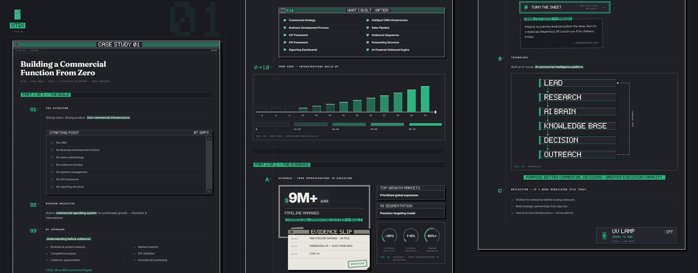
התיק כולו · 1200px · שלושה טורים של אותו מסמך
האייקון עומד על השולחן מעל החלון שלו; הכותרת ב-Fraunces; המספרים תלויים בשוליים;
רשימת החוסרים היא חלון לא פעיל עם פס גלילה אמיתי; $9M+ יושב בתוך דיאלוג עם הקו הכפול
של System 1; פתק הראיה חופף אותו — חפיפה אחת למסמך.
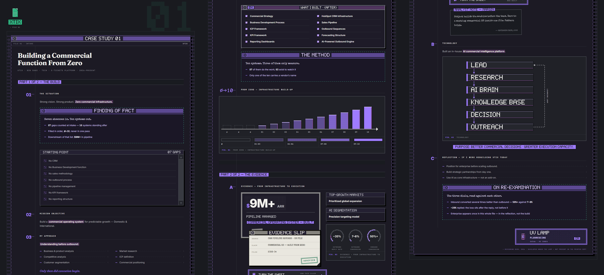
אותו תיק · המנורה דלוקה
המנורה עומדת בראש התיק והסגול נוגע בתיקייה בלבד — הרקע נשאר פחם.
האזורים המפותחים נפתחים; אין יותר שורות חתומות.
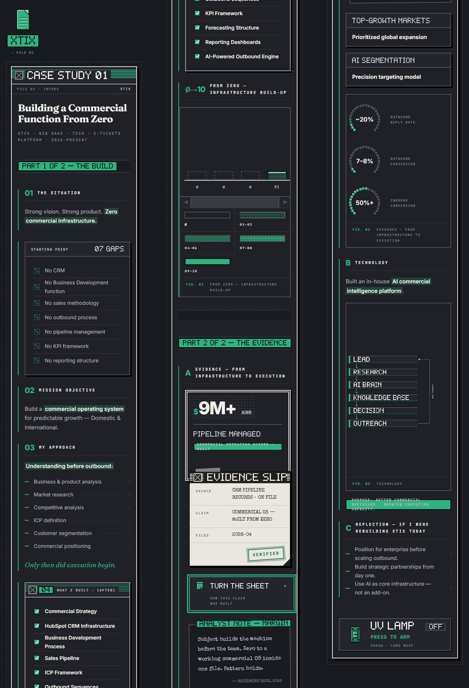
390px · שלוש רצועות של אותו מסמך
בטלפון העלה מאבד את השוליים והמספר עולה לשורה שמעליו; החלונות נשארים חלונות.
02 · המשפחהאותה מערכת, שבע זהויות
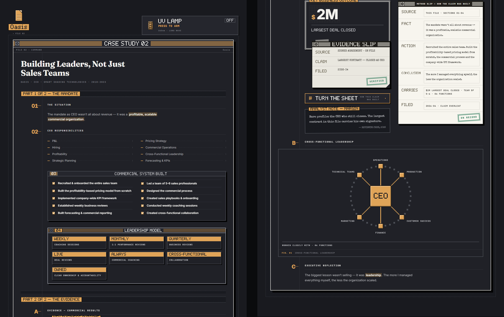
OASIS · פליז #E0A458טבעת ה-CEO וחמשת הכפתורים של מודל הניהול.
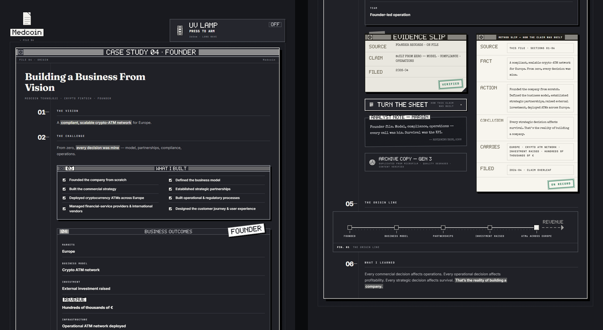
MEDCOIN · לבן #F2F1EDהקובץ היחיד בלי דיו שני — הכל נבנה מגוונים של אותו לבן.
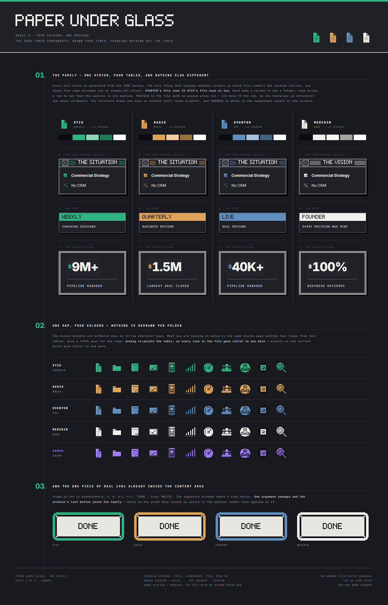
אותם שלושה רכיבים בארבעת הצבעים
ירוק, פליז, קרח, לבן. אותו אייקון מצויר פעם אחת ונצבע לכל תיקייה — האייקון של EVENTER
הוא זה של XTIX, בקרח.
03 · הערכהמאיפה כל דבר מגיע
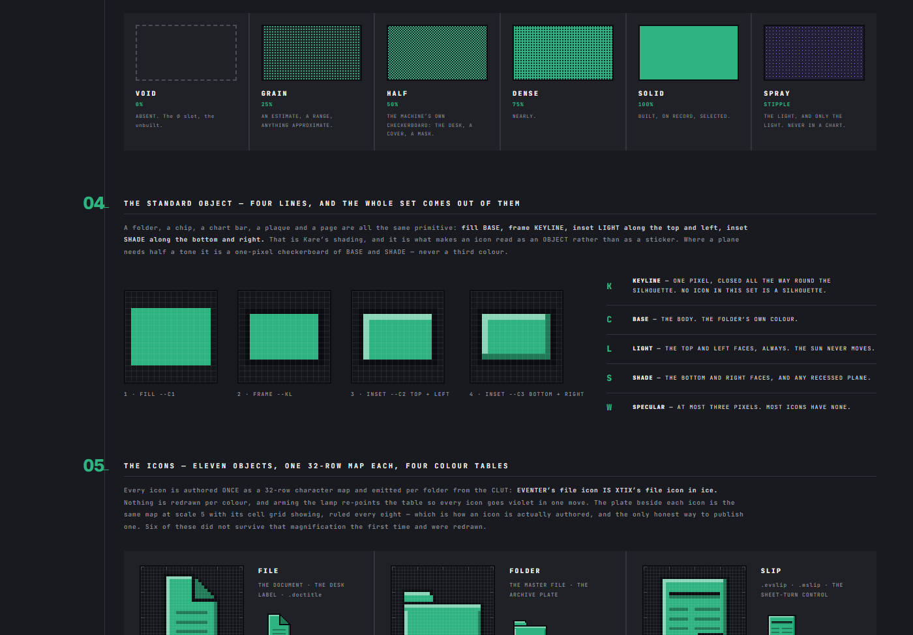
התבניות וחוק ארבעת הקווים
סולם צפיפות לפי כיסוי דיו מדוד (0 · 25 · 50 · 75 · 100), ואחריו הכלל שכל אייקון בנוי ממנו.
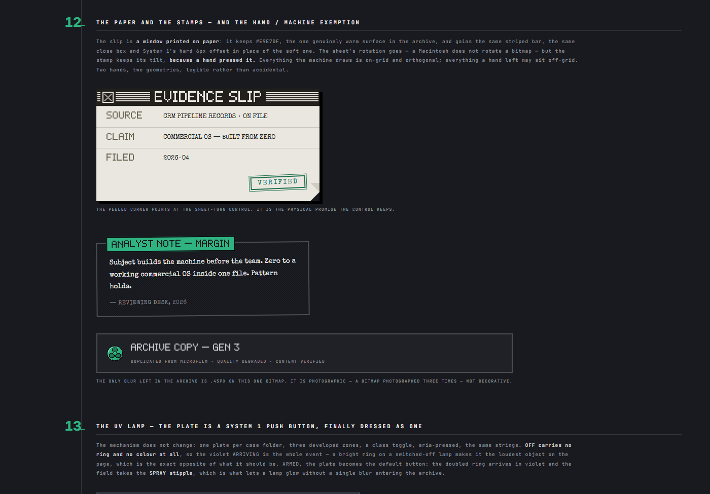
הנייר והחותמות
פתק הראיה הוא חלון מודפס על נייר; החותמת נשארת נטויה כי יד לחצה אותה.
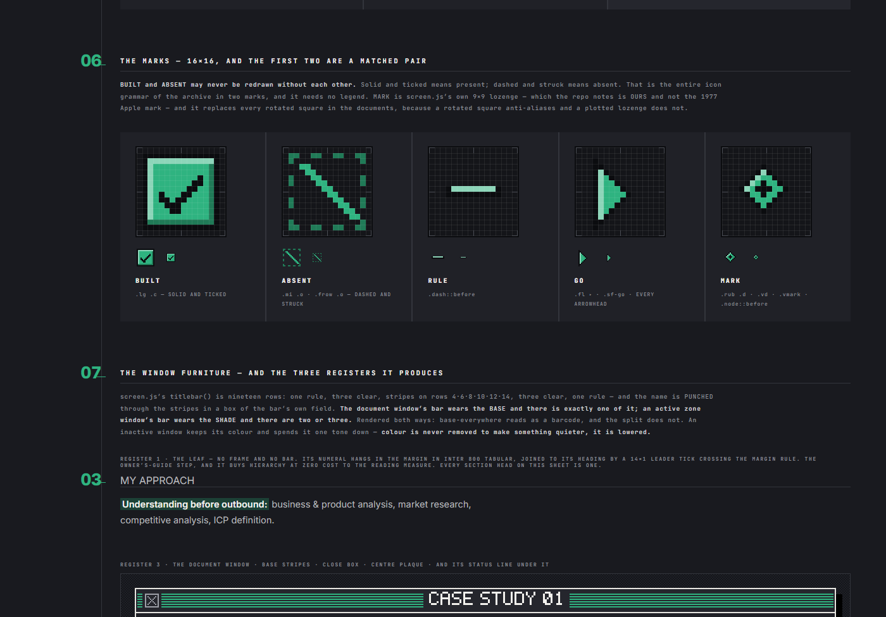
מפת האייקונים · 32×32 עם הרשת
אותה מפה אחת לכל שבעת הקבצים, נצבעת מחדש לפי צבע התיקייה.
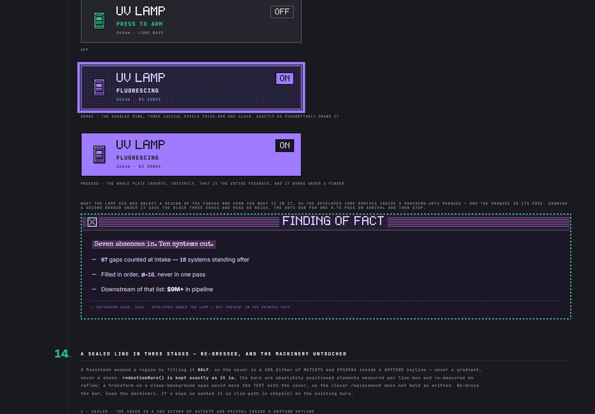
המנורה · כבויה, נדלקת, דלוקה
אותו אפקט UV שקיים היום, בתוך המערכת החדשה.
04 · שלוש ההחלטותמה שנמדד כדי שתוכל להכריע
א · עשרת הכלים ב-LEADERSHIP
A — אייקונים ב-16px: עדין מדי, שניים-שלושה נקראים כערימת קווים.
B — מדף חלונות בשמות: נקי, אבל עשרה גופים ריקים נראים כמו תקלה.
C — אייקונים ב-32px: ההמלצה. מובחנים, קומפקטיים, ובגודל שכל שאר המערכת כבר עובדת בו.
D — מדף עם אייקון בכל חלון: הכי כבד והכי ארוך.
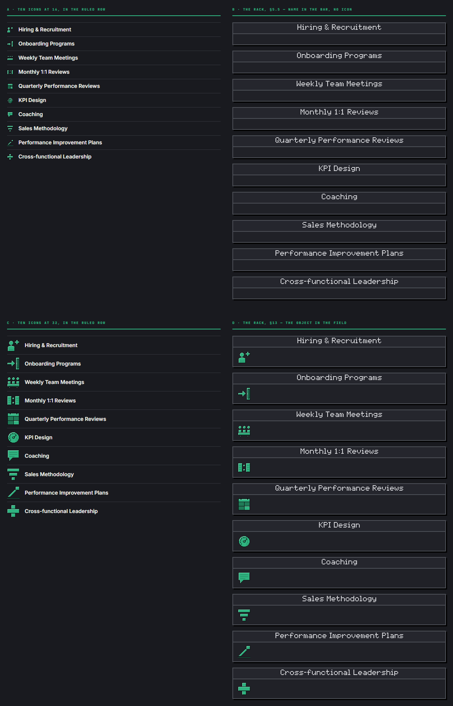
ארבע האפשרויות · 1200px · כל עשרת השמות אומתו מילה במילה מול המסמך
A ו-C משמאל, B ו-D מימין.
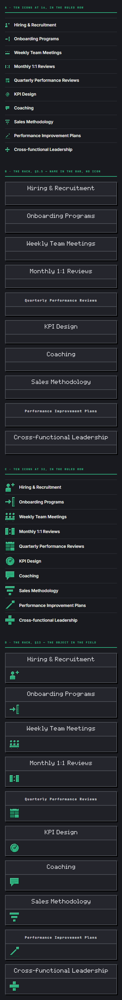
390px · אותן ארבע אפשרויות
בטלפון הפער בין האפשרויות גדל: המדף בשמות נמתח על גובה כפול מזה של האייקונים.
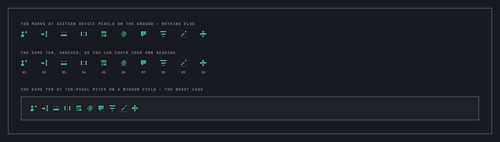
מבחן הגודל האמיתיעשרת הסימנים ב-16 פיקסלים, ממוספרים, ועל שדה חלון — המקרה הגרוע.
ב · XTIX — עמודה אחת או שתיים
עמודה אחת
שתי עמודות
המסמך כולו
4233px · 5.40 מסכים
3893px · 4.97 מסכים
החיסכון
—
340px · 8% · 0.43 מסך
תווים בשורה
72
52
רוחב החלונות בחלק א׳
858px
407px
בטלפון זה ממילא עמודה אחת. גם בגרסת "עמודה אחת" — חלק ב׳ עדיין עומד בשתי עמודות.
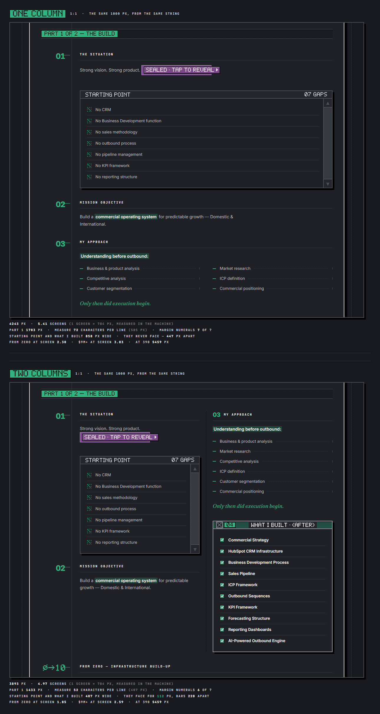
אותם 1000 פיקסלים של המסמך · 1:1 · עמודה אחת למעלה
כאן רואים את עמוד השדרה של השוליים עם 01 · 02 · 03 תלויים עליו, מול שדרה שנשארו עליה שניים.
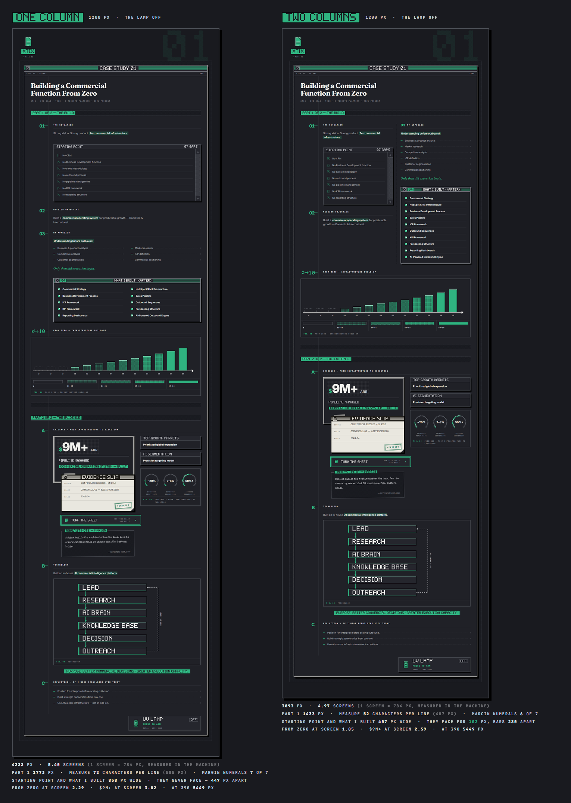
המסמך כולו · שתי הגרסאות זו לצד זו · מוקטן פי 3.5
אותו תוכן בדיוק, מהכותרת ועד החתימה — מימין עמודה אחת, משמאל שתיים.
ג · המקרא של הגרף
הציר כבר מדפיס ∅ ∅ ∅ 01…10 — במסמך שהנקודות שלו הן 01–04.
המפתח כפי שבנוי היום סוטה 206px מהעמודות שהוא מתאר בדסקטופ ו-792px בטלפון.
ההמלצה: חמש רצועות בתוך הציור, בלי מילים. סטייה 0.
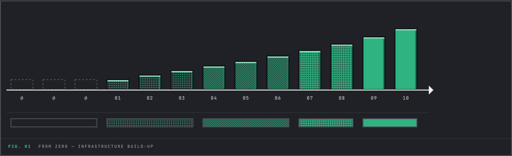
ההמלצה · רצועות בתוך הציור, בלי מילה אחתכל רצועה בדיוק מתחת לעמודות שהיא מתארת.
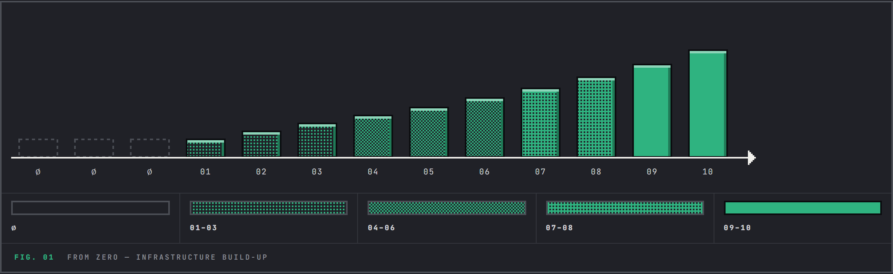
לשם השוואה · המפתח עם טווחי המספריםשתי מערכות מספור בקובץ אחד.
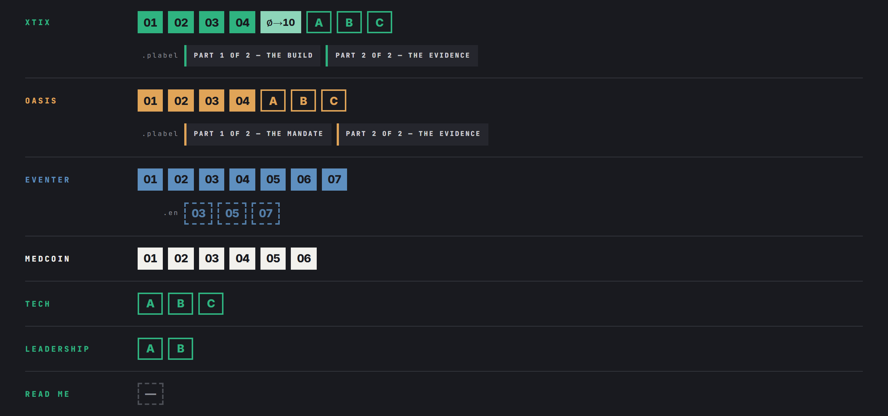
מפקד המספור · שבעת הקבצים
ספרה = נקודה בחלק הראשון, אות = נקודה בחלק הראיות — בדיוק הכלל שהגדרת. אין פערים:
כל רצף ספרות מתחיל ב-01 ורץ ברצף, כל רצף אותיות מתחיל ב-A.